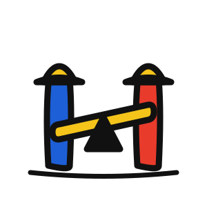
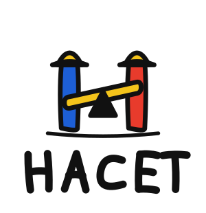
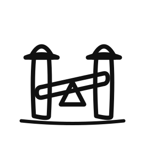

The letter H, built as a see-saw balanced by two figures in hard hats.
A naïve, hand-drawn mark — bold black outlines and flat primary colour. The two uprights of the H are working figures; the crossbar is the plank; a fulcrum sits beneath. It reads at once as an H, a see-saw / balance, and labour.


Vertical
One-colour linehacet-mark.svg — primary colour mark (scales to any size)hacet-mark-line.svg — one-colour line version (currentColor)hacet-wordmark.svg — hand-drawn HACET wordmarkhacet-lockup-horizontal.svg / hacet-lockup-vertical.svg — lockups*.png — raster exports + hacet-favicon-32/180/512.png